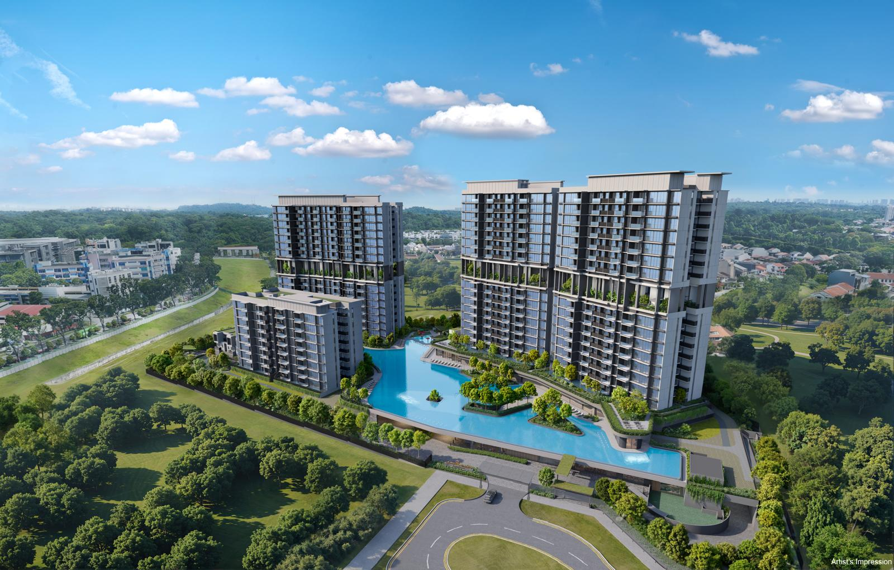

A ~6 minute read for buyers weighing up the lowest-cost entry into the Lentor precinct before the showflat marketing takes over.
Lentor Gardens Residences is Kingsford Group’s 499-unit OCR launch on a fresh 99-year lease — secured at $920 psf ppr, the lowest land cost in the Lentor precinct (roughly $350 psf below the latest plot awarded). A 7-minute walk to Lentor MRT (TE5), fully inside the Lentor Growth Hotspot, with seven future GLS plots within 2 km. On the NAVIS PrimeKey Analysis it scores 30 / 40 (75%) — 3.8 out of 5 stars: five-star marks on growth hotspot, GLS pipeline, project size and tenure, plus a four-star MRT walk. The two real headwinds: no popular primary school within 1 km and a modest ~919-unit MOP cluster nearby. Verdict: Strong Buy for entry-price-led OCR investors and long-horizon capital-growth buyers. Less suited to school-driven families and short-term flippers waiting on an upgrader tidal wave. Preview targeted 4 July 2026.
With 99% of every previous Lentor launch already sold out, the precinct has earned its reputation. The next question is who shows up to define the floor of the cycle — the launch buyers look back at later and say, that was the entry price the whole estate caught up to.
That’s the role Kingsford Group’s Lentor Gardens Residences is positioning itself to play. Its land was secured at $920 psf ppr — the lowest in Lentor and approximately $350 psf below the most recently awarded GLS parcel in the same precinct. For buyers, the question isn’t whether Lentor will continue to mature. It’s whether this launch is buying in cheaper than the market it sits inside.
Below we walk through the five angles you’ll hear from every agent, then run Lentor Gardens through the NAVIS PrimeKey Analysis — the same 8-pillar framework we use to grade any Singapore project on data, not on hype.
Quick project facts
- Developer: Kingsford Group
- Tenure: 99-year leasehold — ~98 years remaining (from April 2025)
- Total units: 500 (499 residential + 1 childcare + 3 retail strata shops)
- District / region: D26 — Lentor / Yishun, Outside Central Region (OCR)
- Land cost: $920 psf ppr (lowest in Lentor; ~$350 psf below latest precinct plot)
- Nearest MRT: Lentor MRT (TE5, Thomson-East Coast Line) — ~7-min walk
- Notable site features: 75 m Skyline Pool + 50 m Lap Pool (longest pool footprint in Lentor); 100% of units oriented to park or pool views; 3 strata terrace homes
- Construction: Non-PPVC — internal walls are hackable, layouts are flexible
- Preview window: 4 July 2026 (target)
The 5 selling angles you’ll hear
1. The lowest entry price in the Lentor precinct. $920 psf ppr on land is roughly $350 psf below the latest comparable GLS parcel. That margin doesn’t disappear — it gets capitalised into the launch price. For buyers, that’s a built-in catch-up runway as later launches anchor the precinct’s ASP higher. For investors, it’s the closest thing OCR has to a margin-of-safety in this cycle.
2. The only strata terrace homes in the entire Lentor precinct. Just three 2-storey strata terrace units are bundled into the development — landed-style living with condo-grade facilities and a 99-year lease. For multi-generational families who want a ground-floor lifestyle without a freehold landed price tag, this is genuinely unique to this launch.
3. Layouts that respect the way you actually live. Non-PPVC construction means internal walls are hackable — rare in this cycle and a meaningful advantage for owner-occupiers who want to customise. Inside the units, the dumbbell layout puts bedrooms at opposite ends of the unit (no shared wall, maximum privacy), wastes almost no floor area on hallway, and sizes rooms so the master fits a king and common bedrooms fit queens without a fight.
4. Resort-density nature on the doorstep. The site sits directly next to the upcoming Hillock Park and Linear Park, and the site planning ensures 100% of units face either park or pool — zero unfortunate orientations. Layered on top: the longest pool footprint in Lentor (75 m Skyline + 50 m Lap), genuine resort-scale amenity rather than the token water features that pad most launches.
5. The Lentor MRT walk + integrated daily amenities. A 7-minute walk to Lentor MRT (TE5) on the Thomson-East Coast Line gives residents a single-seat ride to Orchard, the CBD and Marina Bay. Three commercial retail shops and an on-site Early Childhood Development Centre at the base of the development mean a child-care drop-off and a coffee can happen without leaving the lift core.
The honest review — NAVIS PrimeKey Analysis
Selling angles are useful only insofar as they map to real performance drivers. The PrimeKey Analysis grades a project across the eight pillars that historically matter most — connectivity, growth hotspots, GLS pipeline, project size, remaining tenure, rental yield, school catchment, and upgrader (MOP) demand — and rolls them into a single Investability Score.
Where Lentor Gardens shines
- Growth hotspot (5★). The site sits inside the official Lentor Growth Hotspot zone. That’s a structural tailwind — URA-coordinated infrastructure, amenity densification and master-plan investment compound over a 10-year hold.
- GLS pipeline (5★). Seven future GLS plots within a 2 km radius. Each successful subsequent land bid resets the precinct’s entry pricing upward — and Lentor Gardens, having entered cheapest, captures the widest margin from that uplift.
- Project size (5★). ~500 units lands squarely in the sweet spot — large enough to spread maintenance fees and support deep facilities, small enough to preserve a community feel. Resale liquidity stays healthy.
- Remaining tenure (5★). A ~98-year balance gives a clean 20-year-plus exit window with zero immediate lease-decay drag.
- MRT connectivity (4★). A 7-minute walk to Lentor MRT (TE5) is solidly above the OCR average. Not a 3-minute MRT walk, but well within the rentability band.
Where it doesn’t
- School effect (1★). No popular primary school sits within the 1 km registration radius. The wider Ang Mo Kio belt (CHIJ St. Nicholas, Anderson Primary) is reachable, but the strict 1 km premium — the one that anchors rental and resale demand independent of the property cycle — isn’t at this address.
- MOP / upgrader cluster (2★). Approximately 919 HDB / BTO units within 2 km expected to reach MOP in the next 10 years — a steady demand pool, but below the 1,000+ threshold where the framework awards a higher score. There is upgrader interest; there isn’t a tidal wave.
- Rental yield (3★). Projected ~3.3% gross yield is bang-on the OCR average. Adequate cash-flow cover, but not the headline you’ll see in a CCR project with a 1 km elite school catchment.
Read the full PrimeKey Report
The summary above is the editorial cut. The full NAVIS PrimeKey Analysis Report for Lentor Gardens Residences walks through each of the 8 pillars with the underlying data, 2 km map overlays, the GLS pipeline visualisation, and the rental yield workings behind the 3.3% projection.
Lentor Gardens Residences — NAVIS PrimeKey Analysis
Full 8-pillar scoring, Lentor GLS pipeline map, comparables & rental yield workings. No email gate.
Who is Lentor Gardens Residences actually for?
Strip away the launch noise and the buyer profile is unusually clean:
- Entry-price-led OCR investors — buying the lowest land cost in a precinct that’s actively rebenchmarking upward is one of the cleanest setups OCR offers right now.
- Long-horizon capital-growth buyers — positioning ahead of the next 5–10 years of Lentor master-plan execution rather than chasing the rebound this quarter.
- Multi-generational families considering the strata terrace homes — three units, one shot, no comparable product in the area.
- Owner-occupiers who care about layout — non-PPVC + dumbbell layout + true-sized rooms is a meaningful upgrade over the cookie-cutter PPVC norm.
It’s a weaker fit if your priority is a 1 km elite primary school catchment, or if your underwriting depends on a wave of nearby HDB upgraders driving a 3–5 year resale flip. Neither lever is at maximum intensity at this address.
As always, the responsible next step is to see the data before you see the showflat. Read the PrimeKey Report above, line it up against any other Lentor or OCR shortlist you’re considering, and decide on facts — not on the brochure’s rendering quality.
Want the e-brochure or a VVIP preview?
Preview is targeted for 4 July 2026. Drop your details below for the newest e-brochure, a showflat appointment, or both — and we’ll come back within one business day. Submissions go straight to our editorial inbox at projecthome.sg@gmail.com, not an autoresponder.
This article is for general informational and editorial purposes only and does not constitute legal, tax, financial, or investment advice. All figures — including land cost, unit count, projected yield, walking time, indicative pricing and PrimeKey scoring — reflect publicly available information at time of writing and are subject to change at the developer’s and authorities’ discretion. NAVIS PrimeKey Analysis is a proprietary research and shortlisting tool, not a valuation. Always verify against URA REALIS, the developer’s latest sales material, and consult licensed professionals before any property purchase decision. See our full disclaimer.